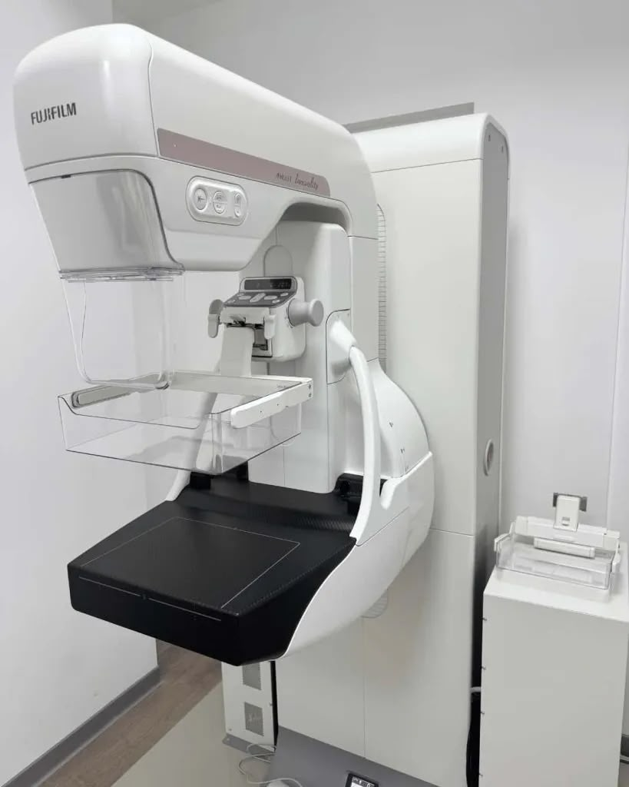

Prenditi curadel tuo seno
Avenir è il nuovo poliambulatorio di Roma dove riceve la senologa Francesca Svegliati: visita, ecografia e mammografia 3D con tomosintesi.
La dottoressa
Fino ad agosto 2026 ha diretto la Senologia diagnostica e la Breast Unit del San Camillo Forlanini. Oggi la dottoressa Francesca Svegliati riceve qui.


Un'ora per te, una volta all'anno



Tre esami, un solo studio
Visita senologica
Il colloquio, l'esame clinico del seno e la lettura degli esami che hai già fatto. Esci sapendo cosa fare e quando tornare.
Ecografia mammaria
Un esame con ultrasuoni, senza radiazioni e indolore. Spesso affianca la mammografia, soprattutto con il seno denso o prima dei 40 anni.
Mammografia 3D con tomosintesi
Il seno viene ricostruito in strati sottili che la radiologa sfoglia uno a uno. Per te si svolge come una normale mammografia.
Tutto in un unico studio
-
Senologia
Visita, ecografia e mammografia 3D con tomosintesi, con la dottoressa Francesca Svegliati.

-
Ginecologia
Controlli e prevenzione, dalla visita al Pap test.
- Visita ginecologica
- Pap test
- HPV test
- Ecografia pelvica

-
Radiologia
Gli esami di diagnostica per immagini saranno pubblicati prima dell'apertura.
Ti visita Francesca Svegliati
Da dove viene
Medico specialista in Diagnostica per Immagini. Fino ad agosto 2026 Primario di Diagnostica per Immagini in Senologia e Responsabile della Breast Unit del San Camillo Forlanini.
Come lavora
Per anni in squadra con chirurghi, oncologi e radioterapisti. Ha organizzato i percorsi diagnostico-terapeutici della Breast Unit.
Prenotare è semplice
Dalla telefonata al giorno della visita, ecco cosa succede.
Chiama o scrivi
Al 06 0000 0000 o su WhatsApp. La segreteria ti propone la prima data libera.
Scegli il giorno
Concordi giorno e orario. Se servono più esami, quando possibile li mettiamo nella stessa mattina.
Prepara gli esami
Porta mammografie ed ecografie precedenti, anche su CD. Il giorno dell'esame evita creme, talco e deodorante.
Il giorno della visita
La dottoressa ti spiega cosa ha visto e quali sono i passi successivi, con calma.
Prenota il tuo
controllo
Chiama la segreteria o lascia il tuo numero qui sotto: ti richiamiamo noi.
Chiama 06 0000 0000Ti richiamiamo noi
Lascia nome e telefono: la segreteria ti chiama per fissare la visita.